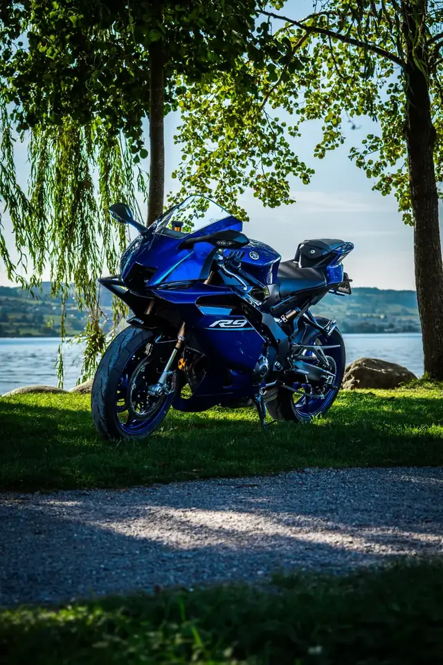
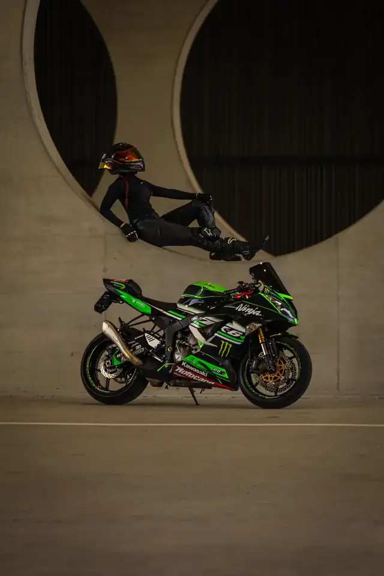
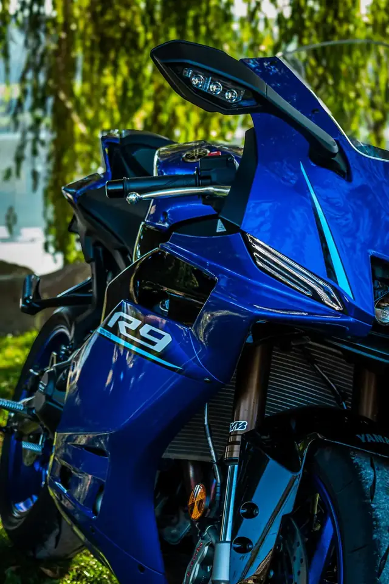
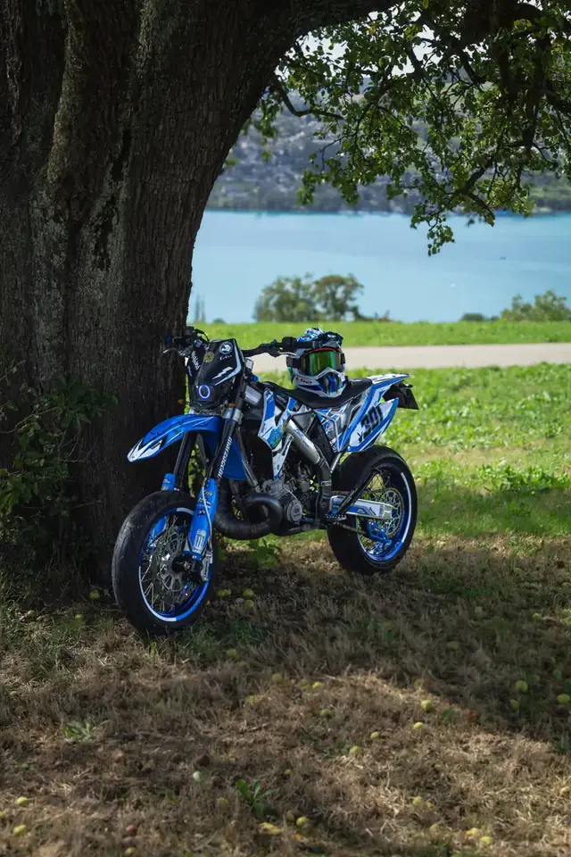

📸 Fotos
Still in motion.
- 10 BilderCHF 90
- 15 BilderCHF 120
- 25 BilderCHF 160
Dein Motorrad lebt von Linie, Licht und Charakter. Ich fotografiere Supersport und Supermoto, auf Wunsch mit dir als Fahrer, an Locations, die zu deinem Bike passen: Fotos für dein Album und Reels für Instagram und TikTok.




Jedes Paket beinhaltet Auswahl, Bearbeitung und die fertige Übergabe deiner Inhalte.
Im Kombi-Paket sparst du bis zu CHF 50.
Meine Basis ist Emmenbrücke bei Luzern. Fotografiert wird in der ganzen Zentralschweiz, also in den Kantonen Luzern, Zug, Schwyz, Nidwalden, Obwalden und Uri, sowie in den Kantonen Aargau und Zürich. Die Anfahrt bis 35 km ab Emmenbrücke ist inklusive, darüber verrechne ich CHF 0.50 pro zusätzlichem Kilometer (hin und zurück).
Je nach Aufwand und Umfang ca. 1,5 bis 2,5 Stunden.
In der Zentralschweiz, den Ort besprechen wir gemeinsam. Gute Locations kenne ich, du kannst aber auch einen Wunschort vorschlagen.
Die Anfahrt ist bis 35 km ab Emmenbrücke inklusive. Bei längeren Strecken verrechne ich CHF 0.50 pro zusätzlichem Kilometer (hin und zurück). Ich sage es dir vorher, nichts kommt überraschend.
Per Twint oder bar, direkt nach dem Shooting.
Erzähl kurz von deinem Fahrzeug und deiner Idee. Ich melde mich in der Regel innert 48 Stunden bei dir.